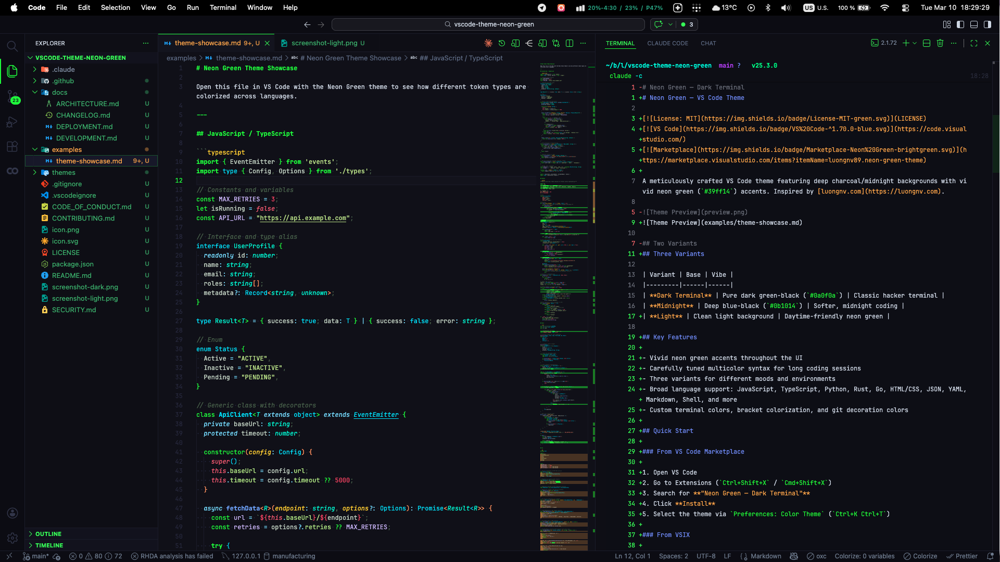
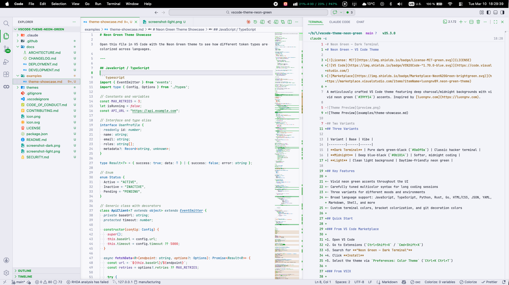
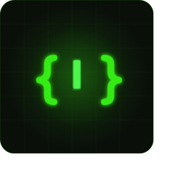

Neon Green — VS Code Theme
A vibrant neon green VS Code theme with three variants built for people who want their editor to feel sharp, electric, and unmistakably alive.
Deep midnight backgrounds. Vivid neon green accents. Carefully tuned syntax that stays readable during long coding sessions.
Install from Marketplace · View on GitHub · Read the README
Why this theme exists
Most themes choose one of two extremes:
- visually loud, but tiring after an hour
- safe and readable, but forgettable
Neon Green tries to hit the better balance:
- a strong identity
- clear syntax separation
- a dark terminal aesthetic that still feels modern
- enough contrast to stay useful during real work
Theme variants
Screenshots
Dark Terminal

Light Variant

Installation
Marketplace
Open VS Code, search for Neon Green — Dark Terminal, then click Install.
VSIX
npm install -g @vscode/vsce
vsce package
code --install-extension neon-green-theme-1.0.0.vsixManual
Copy the project folder into your VS Code extensions directory:
- macOS/Linux:
~/.vscode/extensions/neon-green-theme - Windows:
%USERPROFILE%\.vscode\extensions\neon-green-theme
What the theme covers
- editor chrome
- tabs, sidebar, panels, activity bar, status bar
- terminal colors
- git decorations
- bracket colors
- markdown
- syntax highlighting for common languages like JavaScript, TypeScript, Python, Rust, Go, JSON, YAML, Shell, HTML, and CSS
Palette snapshot
#0e0e1a
#d5dce8
#39ff14
#39ff1425
#0b0b16
#0b0b16
#080812
#ff5555
#ffb347
#8394ff
Markdown rendering gallery
This section intentionally shows many Markdown element types so the generated page can act as a living visual reference.
Text styles
This is a normal paragraph with bold text, italic text, bold italic text, strikethrough, and inline code.
You can also check a standard link style here: VS Code Marketplace.
Lists
Ordered
- Install the theme
- Select the variant you like
- Open a real project
- See if it still feels good after a full work session
Unordered
- Dark Terminal for classic neon contrast
- Midnight for a softer dark setup
- Light for daytime work
Nested
- Editor experience
- syntax contrast
- bracket readability
- git decorations
- UI chrome
- sidebar
- status bar
- tabs
Task list
- Dark variant
- Midnight variant
- Light variant
- Your own favorite setup
Quote
A theme should have a point of view, but it should still help you ship.
Table
| Element | What to look for |
|---|---|
| Headings | hierarchy and spacing |
| Inline code | contrast and readability |
| Tables | borders, density, scanability |
| Quotes | separation without noise |
| Lists | rhythm and indentation |
Horizontal rule
Images

Syntax showcase
TypeScript
import { EventEmitter } from 'node:events';
type ThemeVariant = 'dark' | 'midnight' | 'light';
interface InstallGuide {
variant: ThemeVariant;
accent: string;
isRecommended: boolean;
}
const VARIANTS: InstallGuide[] = [
{ variant: 'dark', accent: '#39ff14', isRecommended: true },
{ variant: 'midnight', accent: '#4dff4d', isRecommended: true },
{ variant: 'light', accent: '#00a63e', isRecommended: false },
];
export class ThemeRegistry extends EventEmitter {
constructor(private readonly variants: InstallGuide[]) {
super();
}
find(variant: ThemeVariant): InstallGuide | undefined {
return this.variants.find((item) => item.variant === variant);
}
}Python
from dataclasses import dataclass
from typing import Literal
ThemeVariant = Literal["dark", "midnight", "light"]
@dataclass
class ThemePreview:
variant: ThemeVariant
accent: str
background: str
def summary(self) -> str:
return f"{self.variant}: accent={self.accent}, background={self.background}"
preview = ThemePreview("dark", "#39ff14", "#0e0e1a")
print(preview.summary())Rust
#[derive(Debug)]
enum Variant {
Dark,
Midnight,
Light,
}
fn accent(variant: &Variant) -> &'static str {
match variant {
Variant::Dark => "#39ff14",
Variant::Midnight => "#4dff4d",
Variant::Light => "#00a63e",
}
}
fn main() {
let current = Variant::Dark;
println!("accent = {}", accent(¤t));
}JSON
{
"name": "neon-green-theme",
"displayName": "Neon Green — Dark Terminal",
"publisher": "luongnv89",
"variants": ["dark", "midnight", "light"],
"accent": "#39ff14"
}Bash
npm install -g @vscode/vsce
vsce package
code --install-extension neon-green-theme-1.0.0.vsixOpen source details
- License: MIT
- Publisher: luongnv89
- Extension type: VS Code theme
- Repository: luongnv89/vscode-theme-neon-green
If you want to improve the theme, open an issue, suggest a language-specific token tweak, or send a PR.
Final call
If you want a theme that feels like a neon terminal without becoming unreadable chaos, this one is built for that exact sweet spot.